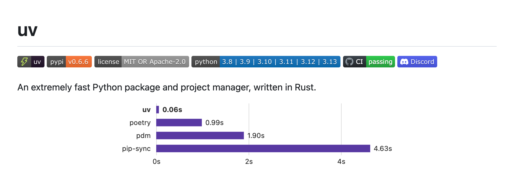

Code
!pip install uvTony D
March 14, 2025
A comprehensive guide to using uv for Python project and package management. This document covers installation, project initialization, Python version management, and various package operations.
This document provides a comprehensive guide to using uv, a fast and efficient tool for Python project and package management. It covers the entire workflow, from installation and project initialization to managing Python versions and handling package operations. The guide also demonstrates how to use uv to synchronize dependencies and even run scripts with specific package requirements. This is a valuable resource for any Python developer looking to streamline their development process.
Introduces uv as a fast and comprehensive tool for Python project and package management. It covers uv’s installation, project initialization, Python version management, package operations, and dependency synchronization.
🚀 A single tool to replace pip, pip-tools, pipx, poetry, pyenv, twine, virtualenv, and more.
⚡️ 10-100x faster than pip.
🗂️ Provides comprehensive project management, with a universal lockfile.

cpython-3.14.0a5+freethreaded-macos-aarch64-none <download available>
cpython-3.14.0a5-macos-aarch64-none <download available>
cpython-3.13.2+freethreaded-macos-aarch64-none <download available>
cpython-3.13.2-macos-aarch64-none /usr/local/bin/python3.13 -> ../../../Library/Frameworks/Python.framework/Versions/3.13/bin/python3.13
cpython-3.13.2-macos-aarch64-none /opt/homebrew/opt/python@3.13/bin/python3.13 -> ../Frameworks/Python.framework/Versions/3.13/bin/python3.13
cpython-3.13.2-macos-aarch64-none /Library/Frameworks/Python.framework/Versions/3.13/bin/python3.13
cpython-3.13.2-macos-aarch64-none /Library/Frameworks/Python.framework/Versions/3.13/bin/python3 -> python3.13
cpython-3.13.2-macos-aarch64-none <download available>
cpython-3.12.9-macos-aarch64-none /usr/local/bin/python3.12 -> ../../../Library/Frameworks/Python.framework/Versions/3.12/bin/python3.12
cpython-3.12.9-macos-aarch64-none /usr/local/bin/python3 -> ../../../Library/Frameworks/Python.framework/Versions/3.12/bin/python3
cpython-3.12.9-macos-aarch64-none /Library/Frameworks/Python.framework/Versions/3.12/bin/python3.12
cpython-3.12.9-macos-aarch64-none /Library/Frameworks/Python.framework/Versions/3.12/bin/python3 -> python3.12
cpython-3.12.9-macos-aarch64-none <download available>
cpython-3.11.11-macos-aarch64-none /Users/jinchaoduan/.local/share/uv/python/cpython-3.11.11-macos-aarch64-none/bin/python3.11
cpython-3.11.9-macos-aarch64-none /usr/local/bin/python3.11 -> ../../../Library/Frameworks/Python.framework/Versions/3.11/bin/python3.11
cpython-3.11.9-macos-aarch64-none /Library/Frameworks/Python.framework/Versions/3.11/bin/python3.11
cpython-3.11.9-macos-aarch64-none /Library/Frameworks/Python.framework/Versions/3.11/bin/python3 -> python3.11
cpython-3.11.9-macos-aarch64-none /Users/jinchaoduan/.local/share/uv/python/cpython-3.11.9-macos-aarch64-none/bin/python3.11
cpython-3.10.16-macos-aarch64-none <download available>
cpython-3.9.21-macos-aarch64-none <download available>
cpython-3.9.6-macos-aarch64-none /Library/Developer/CommandLineTools/usr/bin/python3 -> ../../Library/Frameworks/Python3.framework/Versions/3.9/bin/python3
cpython-3.8.20-macos-aarch64-none <download available>
pypy-3.11.11-macos-aarch64-none <download available>
pypy-3.10.16-macos-aarch64-none <download available>
pypy-3.9.19-macos-aarch64-none <download available>
pypy-3.8.16-macos-aarch64-none <download available>░░░░░░░░░░░░░░░░░░░░░░░░░░░░░░░░░░░░░░░░░░░░░░░░░░░░░░░░░░░░░░░░░░░░░░░░░░░░ 0/0⠙ Resolving dependencies... ⠋ Resolving dependencies... ⠙ Resolving dependencies... ⠹ Resolving dependencies... ⠸ Resolving dependencies... ⠸ requests==2.32.4 ⠸ rich==14.0.0 ⠼ rich==14.0.0 ⠴ rich==14.0.0 ⠦ rich==14.0.0 ⠦ charset-normalizer==3.4.2 ⠦ idna==3.10 ⠦ urllib3==2.5.0 ⠦ certifi==2025.6.15 ⠦ markdown-it-py==3.0.0 ⠦ pygments==2.19.2 ⠦ mdurl==0.1.2 ⠦ ░░░░░░░░░░░░░░░░░░░░ [0/0] Installing wheels... ░░░░░░░░░░░░░░░░░░░░ [0/9] Installing wheels... ░░░░░░░░░░░░░░░░░░░░ [0/9] certifi==2025.6.15 ██░░░░░░░░░░░░░░░░░░ [1/9] certifi==2025.6.15 ██░░░░░░░░░░░░░░░░░░ [1/9] rich==14.0.0 ████░░░░░░░░░░░░░░░░ [2/9] rich==14.0.0 ████░░░░░░░░░░░░░░░░ [2/9] idna==3.10 ██████░░░░░░░░░░░░░░ [3/9] idna==3.10 ██████░░░░░░░░░░░░░░ [3/9] requests==2.32.4 ████████░░░░░░░░░░░░ [4/9] requests==2.32.4 ████████░░░░░░░░░░░░ [4/9] urllib3==2.5.0 ███████████░░░░░░░░░ [5/9] urllib3==2.5.0 ███████████░░░░░░░░░ [5/9] mdurl==0.1.2 █████████████░░░░░░░ [6/9] mdurl==0.1.2 █████████████░░░░░░░ [6/9] markdown-it-py==3.0.0 ███████████████░░░░░ [7/9] markdown-it-py==3.0.0 ███████████████░░░░░ [7/9] charset-normalizer==3.4.2 █████████████████░░░ [8/9] charset-normalizer==3.4.2 █████████████████░░░ [8/9] pygments==2.19.2 ████████████████████ [9/9] pygments==2.19.2 Installed 9 packages in 21ms
test.py is running
version is :
14.0.0https://github.com/astral-sh/uv
---
title: "Version control for Python with uv"
author: "Tony D"
execute:
warning: false
error: false
date: "2025-03-14"
categories:
- Tool
- Python
image: "images.png"
jupyter: python3
---
A comprehensive guide to using uv for Python project and package management. This document covers installation, project initialization, Python version management, and various package operations.
This document provides a comprehensive guide to using `uv`, a fast and efficient tool for Python project and package management. It covers the entire workflow, from installation and project initialization to managing Python versions and handling package operations. The guide also demonstrates how to use `uv` to synchronize dependencies and even run scripts with specific package requirements. This is a valuable resource for any Python developer looking to streamline their development process.
Introduces `uv` as a fast and comprehensive tool for Python project and package management. It covers `uv`'s installation, project initialization, Python version management, package operations, and dependency synchronization.
- 🚀 A single tool to replace `pip`, `pip-tools`, `pipx`, `poetry`, `pyenv`, `twine`, `virtualenv`, and more.
- ⚡️ [10-100x faster](https://github.com/astral-sh/uv/blob/main/BENCHMARKS.md) than `pip`.
- 🗂️ Provides [comprehensive project management](https://github.com/astral-sh/uv?tab=readme-ov-file#projects), with a [universal lockfile](https://docs.astral.sh/uv/concepts/projects/layout#the-lockfile).

# install
```{python}
#| eval: false
!pip install uv
```
# create project in current folder
```{python}
#| eval: false
!uv init
```
# show download python version
# chose python version
```{python}
#| eval: false
!uv python pin 3.13
```
# show all python include non download version
```{python}
!uv python list
```
# download python version if not download
```{python}
#| eval: false
!uv python install cpython-3.14.0
```
# install pacakge
```{python}
#| eval: false
!uv add siuba
```
# show pacakge
```{python}
#| eval: false
!uv tree
```
# delete pacakge
```{python}
#| eval: false
!uv remove rich
```
# update lock file
```{python}
#| eval: false
!uv lock --upgrade
```
# Locking requirements
```{python}
#| eval: false
uv pip compile pyproject.toml -o requirements.txt
```
# check lock file and current environment
```{python}
#| eval: false
!uv lock --check
```
# Sync the project's dependencies with the environment,it will add packages to the environment from toml file.
```{python}
#| eval: false
!uv sync
```
# using uv with script header
## there is no rich package in python
```{python}
#| eval: false
try:
import rich
print('pacakge installed')
except ImportError as e:
print('pacakge not installed')
pass # module doesn't exist, deal with it.
```
## but can add rich package in script
```{.python file.name='test.py'}
#| eval: false
{{< include test.py >}}
```
## run .py with uv
```{python}
!uv run test.py
```
# reference:
https://github.com/astral-sh/uv